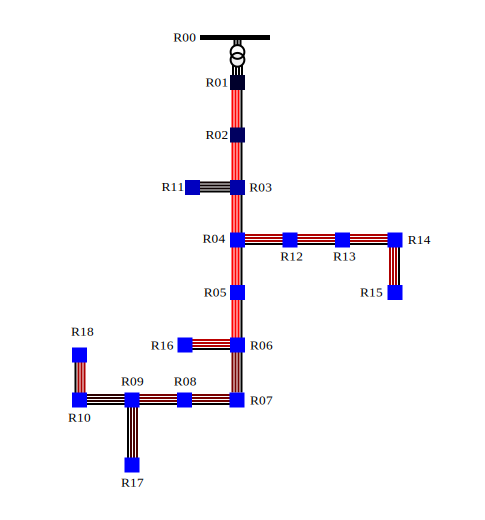
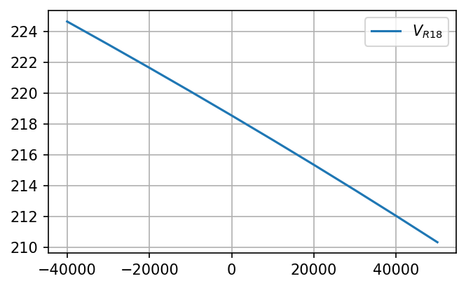

CIGRE European Low Voltage Residential Network#
from IPython.core.display import HTML,SVG
SVG('./cigre_eu_lv_res_tooltips.svg')

Model building#
from pydae.urisi import urisi_builder
grid = urisi_builder.urisi('cigre_eu_lv_res.hjson')
grid.uz_jacs = False
grid.build('cigre_eu_lv_res')
---------------------------------------------------------------------------
DistutilsExecError Traceback (most recent call last)
File ~\anaconda3\Lib\site-packages\setuptools\_distutils\_msvccompiler.py:515, in MSVCCompiler.link(self, target_desc, objects, output_filename, output_dir, libraries, library_dirs, runtime_library_dirs, export_symbols, debug, extra_preargs, extra_postargs, build_temp, target_lang)
514 log.debug('Executing "%s" %s', self.linker, ' '.join(ld_args))
--> 515 self.spawn([self.linker] + ld_args)
516 except DistutilsExecError as msg:
File ~\anaconda3\Lib\site-packages\setuptools\_distutils\_msvccompiler.py:524, in MSVCCompiler.spawn(self, cmd)
523 with self._fallback_spawn(cmd, env) as fallback:
--> 524 return super().spawn(cmd, env=env)
525 return fallback.value
File ~\anaconda3\Lib\site-packages\setuptools\_distutils\ccompiler.py:1041, in CCompiler.spawn(self, cmd, **kwargs)
1040 def spawn(self, cmd, **kwargs):
-> 1041 spawn(cmd, dry_run=self.dry_run, **kwargs)
File ~\anaconda3\Lib\site-packages\setuptools\_distutils\spawn.py:70, in spawn(cmd, search_path, verbose, dry_run, env)
69 cmd = cmd[0]
---> 70 raise DistutilsExecError(
71 "command {!r} failed with exit code {}".format(cmd, exitcode)
72 )
DistutilsExecError: command 'C:\\Program Files\\Microsoft Visual Studio\\2022\\Community\\VC\\Tools\\MSVC\\14.34.31933\\bin\\HostX86\\x64\\link.exe' failed with exit code 1104
During handling of the above exception, another exception occurred:
LinkError Traceback (most recent call last)
File ~\anaconda3\Lib\site-packages\cffi\ffiplatform.py:48, in _build(tmpdir, ext, compiler_verbose, debug)
47 set_verbosity(compiler_verbose)
---> 48 dist.run_command('build_ext')
49 cmd_obj = dist.get_command_obj('build_ext')
File ~\anaconda3\Lib\site-packages\setuptools\dist.py:989, in Distribution.run_command(self, command)
986 # Postpone defaults until all explicit configuration is considered
987 # (setup() args, config files, command line and plugins)
--> 989 super().run_command(command)
File ~\anaconda3\Lib\site-packages\setuptools\_distutils\dist.py:988, in Distribution.run_command(self, command)
987 cmd_obj.ensure_finalized()
--> 988 cmd_obj.run()
989 self.have_run[command] = 1
File ~\anaconda3\Lib\site-packages\setuptools\command\build_ext.py:88, in build_ext.run(self)
87 old_inplace, self.inplace = self.inplace, 0
---> 88 _build_ext.run(self)
89 self.inplace = old_inplace
File ~\anaconda3\Lib\site-packages\setuptools\_distutils\command\build_ext.py:345, in build_ext.run(self)
344 # Now actually compile and link everything.
--> 345 self.build_extensions()
File ~\anaconda3\Lib\site-packages\setuptools\_distutils\command\build_ext.py:467, in build_ext.build_extensions(self)
466 else:
--> 467 self._build_extensions_serial()
File ~\anaconda3\Lib\site-packages\setuptools\_distutils\command\build_ext.py:493, in build_ext._build_extensions_serial(self)
492 with self._filter_build_errors(ext):
--> 493 self.build_extension(ext)
File ~\anaconda3\Lib\site-packages\setuptools\command\build_ext.py:249, in build_ext.build_extension(self, ext)
248 self.compiler = self.shlib_compiler
--> 249 _build_ext.build_extension(self, ext)
250 if ext._needs_stub:
File ~\anaconda3\Lib\site-packages\setuptools\_distutils\command\build_ext.py:572, in build_ext.build_extension(self, ext)
570 language = ext.language or self.compiler.detect_language(sources)
--> 572 self.compiler.link_shared_object(
573 objects,
574 ext_path,
575 libraries=self.get_libraries(ext),
576 library_dirs=ext.library_dirs,
577 runtime_library_dirs=ext.runtime_library_dirs,
578 extra_postargs=extra_args,
579 export_symbols=self.get_export_symbols(ext),
580 debug=self.debug,
581 build_temp=self.build_temp,
582 target_lang=language,
583 )
File ~\anaconda3\Lib\site-packages\setuptools\_distutils\ccompiler.py:752, in CCompiler.link_shared_object(self, objects, output_filename, output_dir, libraries, library_dirs, runtime_library_dirs, export_symbols, debug, extra_preargs, extra_postargs, build_temp, target_lang)
737 def link_shared_object(
738 self,
739 objects,
(...)
750 target_lang=None,
751 ):
--> 752 self.link(
753 CCompiler.SHARED_OBJECT,
754 objects,
755 output_filename,
756 output_dir,
757 libraries,
758 library_dirs,
759 runtime_library_dirs,
760 export_symbols,
761 debug,
762 extra_preargs,
763 extra_postargs,
764 build_temp,
765 target_lang,
766 )
File ~\anaconda3\Lib\site-packages\setuptools\_distutils\_msvccompiler.py:517, in MSVCCompiler.link(self, target_desc, objects, output_filename, output_dir, libraries, library_dirs, runtime_library_dirs, export_symbols, debug, extra_preargs, extra_postargs, build_temp, target_lang)
516 except DistutilsExecError as msg:
--> 517 raise LinkError(msg)
518 else:
LinkError: command 'C:\\Program Files\\Microsoft Visual Studio\\2022\\Community\\VC\\Tools\\MSVC\\14.34.31933\\bin\\HostX86\\x64\\link.exe' failed with exit code 1104
During handling of the above exception, another exception occurred:
VerificationError Traceback (most recent call last)
Cell In[2], line 4
2 grid = urisi_builder.urisi('cigre_eu_lv_res.hjson')
3 grid.uz_jacs = False
----> 4 grid.build('cigre_eu_lv_res')
File ~\anaconda3\Lib\site-packages\pydae\urisi\urisi_builder.py:366, in urisi.build(self, name)
364 print('Error: name is not provided.')
365 self.construct(name)
--> 366 self.compile_numba(name)
File ~\anaconda3\Lib\site-packages\pydae\urisi\urisi_builder.py:347, in urisi.compile_numba(self, name)
345 def compile_numba(self, name):
--> 347 build_numba(self.sys_dict,verbose=self.verbose)
File ~\anaconda3\Lib\site-packages\pydae\build_v2.py:1355, in build_numba(sys_dict, verbose)
1353 b.cwrite()
1354 b.template()
-> 1355 b.compile()
File ~\anaconda3\Lib\site-packages\pydae\build_v2.py:773, in builder.compile(self)
771 ffi_ini.cdef(self.defs_ini, override=True)
772 ffi_ini.set_source(module_name=f"{self.name}_ini_cffi",source=self.source_ini)
--> 773 ffi_ini.compile()
774 logging.debug('end compiling ini module')
776 logging.debug('start compiling run module')
File ~\anaconda3\Lib\site-packages\cffi\api.py:725, in FFI.compile(self, tmpdir, verbose, target, debug)
723 raise ValueError("set_source() must be called before compile()")
724 module_name, source, source_extension, kwds = self._assigned_source
--> 725 return recompile(self, module_name, source, tmpdir=tmpdir,
726 target=target, source_extension=source_extension,
727 compiler_verbose=verbose, debug=debug, **kwds)
File ~\anaconda3\Lib\site-packages\cffi\recompiler.py:1564, in recompile(ffi, module_name, preamble, tmpdir, call_c_compiler, c_file, source_extension, extradir, compiler_verbose, target, debug, **kwds)
1562 print('%s %r' % (msg, os.path.abspath(tmpdir)))
1563 os.chdir(tmpdir)
-> 1564 outputfilename = ffiplatform.compile('.', ext,
1565 compiler_verbose, debug)
1566 finally:
1567 os.chdir(cwd)
File ~\anaconda3\Lib\site-packages\cffi\ffiplatform.py:20, in compile(tmpdir, ext, compiler_verbose, debug)
18 saved_environ = os.environ.copy()
19 try:
---> 20 outputfilename = _build(tmpdir, ext, compiler_verbose, debug)
21 outputfilename = os.path.abspath(outputfilename)
22 finally:
23 # workaround for a distutils bugs where some env vars can
24 # become longer and longer every time it is used
File ~\anaconda3\Lib\site-packages\cffi\ffiplatform.py:54, in _build(tmpdir, ext, compiler_verbose, debug)
52 set_threshold(old_level)
53 except (CompileError, LinkError) as e:
---> 54 raise VerificationError('%s: %s' % (e.__class__.__name__, e))
55 #
56 return soname
VerificationError: LinkError: command 'C:\\Program Files\\Microsoft Visual Studio\\2022\\Community\\VC\\Tools\\MSVC\\14.34.31933\\bin\\HostX86\\x64\\link.exe' failed with exit code 1104
Model use#
import numpy as np
from pydae.urisi.utils import report_v,get_v,get_i,get_power
from pydae.urisi.lines import change_line
import matplotlib.pyplot as plt
from pydae.svg_tools import svg,grid2svg
import cigre_eu_lv_res
model = cigre_eu_lv_res.model()
p_load,q_load = 50e3,10e3
params = {'p_load_R18_a':p_load/3,'q_load_R18_a':q_load/3,
'p_load_R18_b':p_load/3,'q_load_R18_b':q_load/3,
'p_load_R18_c':p_load/3,'q_load_R18_c':q_load/3}
model.ini(params,'xy_0.json')
report_v(model,'cigre_eu_lv_res.hjson');
V_R00_an: 11546.5| -0.0º V, V_R00_ag: 11546.5| -0.0º V, V_1 = 11546.5 V, unb = 0.00%
V_R00_bn: 11546.5| -120.0º V, V_R00_bg: 11546.5| -120.0º V, V_2 = 0.0 V
V_R00_cn: 11546.5| 120.0º V, V_R00_cg: 11546.5| 120.0º V, v_0 = 0.0 V
V_R00_ng: 0.0| 0.0º V
V_R01_an: 226.6| -31.7º V, V_R01_ag: 226.2| -31.7º V, V_1 = 226.6 V, unb = 0.02%
V_R01_bn: 226.6| -151.7º V, V_R01_bg: 226.4| -151.9º V, V_2 = 0.0 V
V_R01_cn: 226.6| 88.3º V, V_R01_cg: 227.1| 88.3º V, v_0 = 0.5 V
V_R01_ng: 0.5| 104.1º V
V_R02_an: 224.1| -31.8º V, V_R02_ag: 223.9| -31.7º V, V_1 = 224.6 V, unb = 0.42%
V_R02_bn: 224.5| -151.9º V, V_R02_bg: 224.4| -151.9º V, V_2 = 0.2 V
V_R02_cn: 225.1| 88.2º V, V_R02_cg: 225.3| 88.2º V, v_0 = 0.6 V
V_R02_ng: 0.2| 104.7º V
V_R03_an: 221.7| -31.8º V, V_R03_ag: 221.7| -31.8º V, V_1 = 222.5 V, unb = 0.83%
V_R03_bn: 222.4| -152.0º V, V_R03_bg: 222.4| -152.0º V, V_2 = 0.4 V
V_R03_cn: 223.5| 88.1º V, V_R03_cg: 223.5| 88.1º V, v_0 = 0.7 V
V_R03_ng: 0.0| -84.8º V
V_R04_an: 219.4| -31.9º V, V_R04_ag: 219.6| -31.9º V, V_1 = 220.7 V, unb = 1.22%
V_R04_bn: 220.5| -152.1º V, V_R04_bg: 220.6| -152.1º V, V_2 = 0.5 V
V_R04_cn: 222.1| 88.0º V, V_R04_cg: 221.8| 88.0º V, v_0 = 0.8 V
V_R04_ng: 0.3| -77.4º V
V_R05_an: 217.7| -31.9º V, V_R05_ag: 218.1| -32.0º V, V_1 = 219.3 V, unb = 1.51%
V_R05_bn: 219.1| -152.2º V, V_R05_bg: 219.3| -152.1º V, V_2 = 0.7 V
V_R05_cn: 221.0| 87.9º V, V_R05_cg: 220.6| 87.9º V, v_0 = 0.8 V
V_R05_ng: 0.5| -76.7º V
V_R06_an: 216.1| -31.9º V, V_R06_ag: 216.5| -32.1º V, V_1 = 217.9 V, unb = 1.80%
V_R06_bn: 217.7| -152.3º V, V_R06_bg: 217.9| -152.2º V, V_2 = 0.8 V
V_R06_cn: 220.0| 87.9º V, V_R06_cg: 219.4| 87.8º V, v_0 = 0.9 V
V_R06_ng: 0.7| -76.5º V
V_R07_an: 215.1| -32.0º V, V_R07_ag: 215.6| -32.1º V, V_1 = 217.1 V, unb = 1.99%
V_R07_bn: 216.9| -152.4º V, V_R07_bg: 217.1| -152.2º V, V_2 = 0.9 V
V_R07_cn: 219.4| 87.8º V, V_R07_cg: 218.6| 87.7º V, v_0 = 0.9 V
V_R07_ng: 0.8| -76.1º V
V_R08_an: 214.0| -32.0º V, V_R08_ag: 214.7| -32.1º V, V_1 = 216.3 V, unb = 2.17%
V_R08_bn: 216.1| -152.5º V, V_R08_bg: 216.3| -152.2º V, V_2 = 0.9 V
V_R08_cn: 218.7| 87.8º V, V_R08_cg: 217.9| 87.7º V, v_0 = 1.0 V
V_R08_ng: 0.9| -75.9º V
V_R09_an: 213.0| -32.0º V, V_R09_ag: 213.7| -32.2º V, V_1 = 215.5 V, unb = 2.36%
V_R09_bn: 215.2| -152.5º V, V_R09_bg: 215.4| -152.3º V, V_2 = 1.0 V
V_R09_cn: 218.1| 87.7º V, V_R09_cg: 217.2| 87.6º V, v_0 = 1.0 V
V_R09_ng: 1.0| -75.7º V
V_R10_an: 212.4| -32.0º V, V_R10_ag: 213.2| -32.2º V, V_1 = 215.0 V, unb = 2.48%
V_R10_bn: 214.7| -152.6º V, V_R10_bg: 215.0| -152.3º V, V_2 = 1.0 V
V_R10_cn: 217.7| 87.7º V, V_R10_cg: 216.7| 87.6º V, v_0 = 1.0 V
V_R10_ng: 1.1| -75.4º V
V_R11_an: 221.0| -31.8º V, V_R11_ag: 221.0| -31.8º V, V_1 = 221.9 V, unb = 0.86%
V_R11_bn: 221.8| -152.0º V, V_R11_bg: 221.8| -152.0º V, V_2 = 0.4 V
V_R11_cn: 222.9| 88.1º V, V_R11_cg: 222.9| 88.1º V, v_0 = 0.7 V
V_R11_ng: 0.1| -82.3º V
V_R12_an: 216.9| -31.7º V, V_R12_ag: 217.2| -31.8º V, V_1 = 218.3 V, unb = 1.37%
V_R12_bn: 218.2| -152.0º V, V_R12_bg: 218.3| -151.9º V, V_2 = 0.6 V
V_R12_cn: 219.9| 88.1º V, V_R12_cg: 219.5| 88.1º V, v_0 = 0.8 V
V_R12_ng: 0.4| -76.9º V
V_R13_an: 214.5| -31.6º V, V_R13_ag: 214.8| -31.7º V, V_1 = 216.0 V, unb = 1.52%
V_R13_bn: 215.9| -151.9º V, V_R13_bg: 216.0| -151.8º V, V_2 = 0.6 V
V_R13_cn: 217.7| 88.2º V, V_R13_cg: 217.3| 88.2º V, v_0 = 0.8 V
V_R13_ng: 0.5| -76.6º V
V_R14_an: 212.0| -31.4º V, V_R14_ag: 212.4| -31.5º V, V_1 = 213.7 V, unb = 1.67%
V_R14_bn: 213.5| -151.8º V, V_R14_bg: 213.7| -151.7º V, V_2 = 0.7 V
V_R14_cn: 215.6| 88.4º V, V_R14_cg: 215.1| 88.3º V, v_0 = 0.9 V
V_R14_ng: 0.5| -76.4º V
V_R15_an: 209.6| -31.3º V, V_R15_ag: 210.0| -31.4º V, V_1 = 211.4 V, unb = 1.83%
V_R15_bn: 211.2| -151.7º V, V_R15_bg: 211.3| -151.5º V, V_2 = 0.8 V
V_R15_cn: 213.4| 88.5º V, V_R15_cg: 212.8| 88.5º V, v_0 = 0.9 V
V_R15_ng: 0.6| -76.2º V
V_R16_an: 213.9| -31.8º V, V_R16_ag: 214.4| -31.9º V, V_1 = 215.9 V, unb = 1.94%
V_R16_bn: 215.7| -152.2º V, V_R16_bg: 215.9| -152.0º V, V_2 = 0.8 V
V_R16_cn: 218.1| 88.0º V, V_R16_cg: 217.4| 87.9º V, v_0 = 0.9 V
V_R16_ng: 0.7| -76.4º V
V_R17_an: 211.6| -31.9º V, V_R17_ag: 212.4| -32.1º V, V_1 = 214.1 V, unb = 2.46%
V_R17_bn: 213.9| -152.5º V, V_R17_bg: 214.1| -152.2º V, V_2 = 1.0 V
V_R17_cn: 216.9| 87.8º V, V_R17_cg: 215.9| 87.7º V, v_0 = 1.0 V
V_R17_ng: 1.0| -75.6º V
V_R18_an: 210.3| -32.0º V, V_R18_ag: 211.2| -32.2º V, V_1 = 213.0 V, unb = 2.63%
V_R18_bn: 212.8| -152.6º V, V_R18_bg: 213.0| -152.3º V, V_2 = 1.1 V
V_R18_cn: 215.9| 87.7º V, V_R18_cg: 214.8| 87.6º V, v_0 = 1.1 V
V_R18_ng: 1.1| -74.9º V
s = svg('./cigre_eu_lv_res.svg')
s.set_grid(model,'cigre_eu_lv_res.hjson')
s.set_tooltips(f'./cigre_eu_lv_res_results.svg')
SVG('./cigre_eu_lv_res_results.svg')
P = []
V = []
for p_R18 in np.arange(50e3,-50e3, -10e3):
model = cigre_eu_lv_res.model()
q_R18 = p_R18*0.2
p_load,q_load = p_R18,q_R18
params = {'p_load_R18_a':p_load/3,'q_load_R18_a':q_load/3,
'p_load_R18_b':p_load/3,'q_load_R18_b':q_load/3,
'p_load_R18_c':p_load/3,'q_load_R18_c':q_load/3}
model.ini(params,'xy_0.json')
V_R18 = get_v(model,'R18')
print(f"Power = {-p_R18/1e3:5.1f} kW, Voltage = {V_R18:0.1f} V")
P += [p_R18]
V += [V_R18]
Power = -50.0 kW, Voltage = 210.3 V
Power = -40.0 kW, Voltage = 212.0 V
Power = -30.0 kW, Voltage = 213.7 V
Power = -20.0 kW, Voltage = 215.3 V
Power = -10.0 kW, Voltage = 217.0 V
Power = -0.0 kW, Voltage = 218.5 V
Power = 10.0 kW, Voltage = 220.1 V
Power = 20.0 kW, Voltage = 221.6 V
Power = 30.0 kW, Voltage = 223.2 V
Power = 40.0 kW, Voltage = 224.7 V
plt.close('all')
fig, axes = plt.subplots(nrows=1,ncols=1, figsize=(5, 3), frameon=False, dpi=150)
axes.plot(P, V, label=f'$V_{{R18}}$')
axes.legend()
axes.grid(True)
